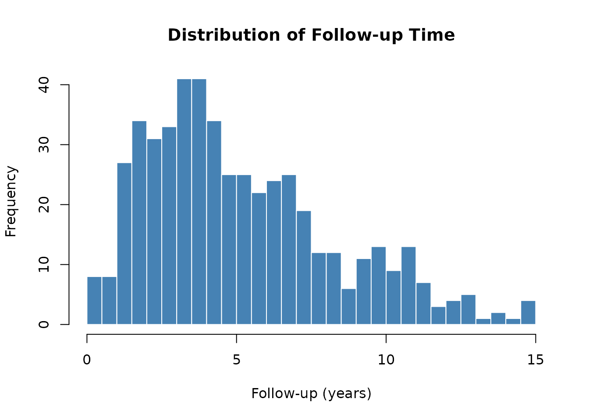

Simulating Cardiac Surgery Survival Data
John Ehrlinger
2026-03-02
Source:vignettes/survival-data.Rmd
survival-data.RmdOverview
The generate_survival_data() function creates a
realistic synthetic cardiac surgery cohort suitable for testing and
demonstrating survival analysis workflows. Survival times are drawn from
a Weibull distribution with a linear predictor built from clinical
variables (LVEF, age, hemoglobin, NYHA class, eGFR), and administrative
censoring is applied at up to 15 years.
library(hvtiRutilities)
#>
#> hvtiRutilities 0.3.0
#>
#> Type hvtiRutilities.news() to see new features, changes, and bug fixes.
#> Generating the Dataset
set.seed(42)
dta <- generate_survival_data(n = 500, seed = 1024)
dim(dta)
#> [1] 500 22
names(dta)
#> [1] "ccfid" "iv_dead" "dead" "reop" "iv_reop"
#> [6] "age" "sex" "bmi" "hgb_bs" "wbc_bs"
#> [11] "plate_bs" "gfr_bs" "lvefvs_b" "lvmass_b" "lvmsi_b"
#> [16] "stvoli_b" "stvold_b" "bypass_time" "xclamp_time" "nyha_class"
#> [21] "diabetes" "hypertension"The dataset contains 22 columns covering patient identifiers, survival outcomes, reoperation, demographics, pre-operative labs, cardiac function, and surgical variables.
Data Structure
str(dta)
#> 'data.frame': 500 obs. of 22 variables:
#> $ ccfid : chr "PT00001" "PT00002" "PT00003" "PT00004" ...
#> ..- attr(*, "label")= chr "Patient ID"
#> $ iv_dead : num 5.13 4.03 10.51 12.84 3.17 ...
#> ..- attr(*, "label")= chr "Follow-up time to death (years)"
#> $ dead : int 0 0 0 0 0 0 1 0 1 0 ...
#> ..- attr(*, "label")= chr "Death indicator (1=dead, 0=censored)"
#> $ reop : int 1 0 1 0 0 0 0 0 0 0 ...
#> ..- attr(*, "label")= chr "Reoperation (1=yes, 0=no)"
#> $ iv_reop : num 0.37 NA 1.08 NA NA NA NA NA NA NA ...
#> ..- attr(*, "label")= chr "Follow-up time to reoperation (years)"
#> $ age : num 33.3 39.2 14.5 30.3 48.7 13.4 39.3 76.1 60.4 52.1 ...
#> ..- attr(*, "label")= chr "Age at surgery (years)"
#> $ sex : Factor w/ 2 levels "Female","Male": 1 1 1 1 1 2 2 1 1 1 ...
#> ..- attr(*, "label")= chr "Sex"
#> $ bmi : num 33.3 25.9 28.5 29.2 20.8 25.3 34.3 26 19.2 27.2 ...
#> ..- attr(*, "label")= chr "Body mass index (kg/m2)"
#> $ hgb_bs : num 15.3 10.1 15.4 11.7 9.8 9.8 9.6 15.7 15.7 13.1 ...
#> ..- attr(*, "label")= chr "Baseline hemoglobin (g/dL)"
#> $ wbc_bs : num 1.5 10.37 3.29 6.37 10.99 ...
#> ..- attr(*, "label")= chr "Baseline WBC count (K/uL)"
#> $ plate_bs : num 102 245 279 294 190 193 120 107 299 219 ...
#> ..- attr(*, "label")= chr "Baseline platelet count (K/uL)"
#> $ gfr_bs : num 79.6 82.6 89 87 95.4 40.3 31.9 80.2 72.1 87.7 ...
#> ..- attr(*, "label")= chr "Baseline eGFR (mL/min/1.73m2)"
#> $ lvefvs_b : num 56.8 58.3 67.9 55.1 62.6 59.3 55.8 58 75 41.8 ...
#> ..- attr(*, "label")= chr "Baseline LV ejection fraction (%)"
#> $ lvmass_b : num 164 140 148 119 224 ...
#> ..- attr(*, "label")= chr "Baseline LV mass (g)"
#> $ lvmsi_b : num 40 40 40 40 40 40 40 40 40 40 ...
#> ..- attr(*, "label")= chr "Baseline LV mass index (g/m2)"
#> $ stvoli_b : num 74.1 30.9 35.9 62.6 59.2 55.7 62.9 64.1 76.3 66.2 ...
#> ..- attr(*, "label")= chr "Baseline SV index - systolic (mL/m2)"
#> $ stvold_b : num 109.8 89.2 73.4 77.6 94.9 ...
#> ..- attr(*, "label")= chr "Baseline SV index - diastolic (mL/m2)"
#> $ bypass_time : num 102 92 47 79 75 34 51 44 110 72 ...
#> ..- attr(*, "label")= chr "Cardiopulmonary bypass time (min)"
#> $ xclamp_time : num 63 63 28 55 46 20 28 26 81 54 ...
#> ..- attr(*, "label")= chr "Aortic cross-clamp time (min)"
#> $ nyha_class : Ord.factor w/ 4 levels "I"<"II"<"III"<..: 1 2 2 2 2 1 3 1 4 2 ...
#> ..- attr(*, "label")= chr "NYHA functional class"
#> $ diabetes : Factor w/ 2 levels "No","Yes": 1 2 1 2 2 2 1 1 1 1 ...
#> ..- attr(*, "label")= chr "Diabetes mellitus"
#> $ hypertension: Factor w/ 2 levels "No","Yes": 2 1 1 1 1 1 1 2 1 2 ...
#> ..- attr(*, "label")= chr "Hypertension"Key columns:
| Column | Description |
|---|---|
ccfid |
Patient identifier |
iv_dead |
Observed follow-up time (years) |
dead |
Event indicator (1 = death, 0 = censored) |
reop |
Reoperation indicator |
iv_reop |
Time to reoperation (years; NA if no reoperation) |
Outcome Summary
# Event rates
cat("Death rate: ", round(mean(dta$dead), 3), "\n")
#> Death rate: 0.54
cat("Reoperation rate: ", round(mean(dta$reop), 3), "\n")
#> Reoperation rate: 0.18
# Follow-up distribution
summary(dta$iv_dead)
#> Min. 1st Qu. Median Mean 3rd Qu. Max.
#> 0.060 2.783 4.383 5.149 6.915 14.896
hist(
dta$iv_dead,
breaks = 30,
main = "Distribution of Follow-up Time",
xlab = "Follow-up (years)",
col = "steelblue",
border = "white"
)
Integration with r_data_types() and
label_map()
The dataset arrives with variable labels attached and several columns
that benefit from type conversion. The r_data_types()
function handles these automatically.
# Convert types: keep IDs and continuous outcomes as-is
model_data <- r_data_types(
dta,
factor_size = 5,
skip_vars = c("ccfid", "iv_dead", "iv_reop")
)
str(model_data[, c("dead", "reop", "sex", "nyha_class", "diabetes", "hypertension")])
#> 'data.frame': 500 obs. of 6 variables:
#> $ dead : logi FALSE FALSE FALSE FALSE FALSE FALSE ...
#> ..- attr(*, "label")= chr "Death indicator (1=dead, 0=censored)"
#> $ reop : logi TRUE FALSE TRUE FALSE FALSE FALSE ...
#> ..- attr(*, "label")= chr "Reoperation (1=yes, 0=no)"
#> $ sex : Factor w/ 2 levels "Female","Male": 1 1 1 1 1 2 2 1 1 1 ...
#> ..- attr(*, "label")= chr "Sex"
#> $ nyha_class : Ord.factor w/ 4 levels "I"<"II"<"III"<..: 1 2 2 2 2 1 3 1 4 2 ...
#> ..- attr(*, "label")= chr "NYHA functional class"
#> $ diabetes : Factor w/ 2 levels "No","Yes": 1 2 1 2 2 2 1 1 1 1 ...
#> ..- attr(*, "label")= chr "Diabetes mellitus"
#> $ hypertension: Factor w/ 2 levels "No","Yes": 2 1 1 1 1 1 1 2 1 2 ...
#> ..- attr(*, "label")= chr "Hypertension"After conversion:
-
deadandreop(2 unique values) →logical -
sex,diabetes,hypertension(character) →factor -
nyha_classwas already an orderedfactor
Extracting Variable Labels
lmap <- label_map(model_data)
print(lmap)
#> key label
#> ccfid ccfid Patient ID
#> iv_dead iv_dead Follow-up time to death (years)
#> dead dead Death indicator (1=dead, 0=censored)
#> reop reop Reoperation (1=yes, 0=no)
#> iv_reop iv_reop Follow-up time to reoperation (years)
#> age age Age at surgery (years)
#> sex sex Sex
#> bmi bmi Body mass index (kg/m2)
#> hgb_bs hgb_bs Baseline hemoglobin (g/dL)
#> wbc_bs wbc_bs Baseline WBC count (K/uL)
#> plate_bs plate_bs Baseline platelet count (K/uL)
#> gfr_bs gfr_bs Baseline eGFR (mL/min/1.73m2)
#> lvefvs_b lvefvs_b Baseline LV ejection fraction (%)
#> lvmass_b lvmass_b Baseline LV mass (g)
#> lvmsi_b lvmsi_b Baseline LV mass index (g/m2)
#> stvoli_b stvoli_b Baseline SV index - systolic (mL/m2)
#> stvold_b stvold_b Baseline SV index - diastolic (mL/m2)
#> bypass_time bypass_time Cardiopulmonary bypass time (min)
#> xclamp_time xclamp_time Aortic cross-clamp time (min)
#> nyha_class nyha_class NYHA functional class
#> diabetes diabetes Diabetes mellitus
#> hypertension hypertension HypertensionThe label map is useful for annotating tables and plots with descriptive names.
Preparing Data for Survival Analysis
# Drop admin columns to match a typical model_data setup
model_data <- model_data[, !names(model_data) %in% c("ccfid", "reop", "iv_reop")]
# Outcome variable breakdown
table(model_data$dead)
#>
#> FALSE TRUE
#> 230 270
# Kaplan-Meier style summary by NYHA class (base R)
nyha_levels <- levels(model_data$nyha_class)
median_fu <- sapply(nyha_levels, function(lvl) {
sub <- model_data[model_data$nyha_class == lvl, ]
median(sub$iv_dead)
})
event_rate <- sapply(nyha_levels, function(lvl) {
sub <- model_data[model_data$nyha_class == lvl, ]
mean(sub$dead)
})
nyha_summary <- data.frame(
nyha_class = nyha_levels,
n = table(model_data$nyha_class),
median_fu_yr = round(median_fu, 2),
death_rate = round(event_rate, 3)
)
print(nyha_summary)
#> nyha_class n.Var1 n.Freq median_fu_yr death_rate
#> I I I 124 4.67 0.444
#> II II II 178 4.81 0.522
#> III III III 151 3.95 0.596
#> IV IV IV 47 3.45 0.681Reproducibility
The seed argument ensures reproducible datasets for
testing:
dta_a <- generate_survival_data(n = 100, seed = 99)
dta_b <- generate_survival_data(n = 100, seed = 99)
identical(dta_a, dta_b) # TRUE
#> [1] TRUEDifferent seeds produce different datasets:
dta_c <- generate_survival_data(n = 100, seed = 7)
identical(dta_a, dta_c) # FALSE
#> [1] FALSESession Information
sessionInfo()
#> R version 4.5.2 (2025-10-31)
#> Platform: x86_64-pc-linux-gnu
#> Running under: Ubuntu 24.04.3 LTS
#>
#> Matrix products: default
#> BLAS: /usr/lib/x86_64-linux-gnu/openblas-pthread/libblas.so.3
#> LAPACK: /usr/lib/x86_64-linux-gnu/openblas-pthread/libopenblasp-r0.3.26.so; LAPACK version 3.12.0
#>
#> locale:
#> [1] LC_CTYPE=C.UTF-8 LC_NUMERIC=C LC_TIME=C.UTF-8
#> [4] LC_COLLATE=C.UTF-8 LC_MONETARY=C.UTF-8 LC_MESSAGES=C.UTF-8
#> [7] LC_PAPER=C.UTF-8 LC_NAME=C LC_ADDRESS=C
#> [10] LC_TELEPHONE=C LC_MEASUREMENT=C.UTF-8 LC_IDENTIFICATION=C
#>
#> time zone: UTC
#> tzcode source: system (glibc)
#>
#> attached base packages:
#> [1] stats graphics grDevices utils datasets methods base
#>
#> other attached packages:
#> [1] hvtiRutilities_0.3.0
#>
#> loaded via a namespace (and not attached):
#> [1] vctrs_0.7.1 cli_3.6.5 knitr_1.51 rlang_1.1.7
#> [5] xfun_0.56 forcats_1.0.1 haven_2.5.5 generics_0.1.4
#> [9] textshaping_1.0.4 jsonlite_2.0.0 glue_1.8.0 htmltools_0.5.9
#> [13] ragg_1.5.0 sass_0.4.10 hms_1.1.4 rmarkdown_2.30
#> [17] tibble_3.3.1 evaluate_1.0.5 jquerylib_0.1.4 fastmap_1.2.0
#> [21] yaml_2.3.12 lifecycle_1.0.5 compiler_4.5.2 dplyr_1.2.0
#> [25] fs_1.6.6 pkgconfig_2.0.3 labelled_2.16.0 systemfonts_1.3.1
#> [29] digest_0.6.39 R6_2.6.1 tidyselect_1.2.1 pillar_1.11.1
#> [33] magrittr_2.0.4 bslib_0.10.0 withr_3.0.2 tools_4.5.2
#> [37] pkgdown_2.2.0 cachem_1.1.0 desc_1.4.3